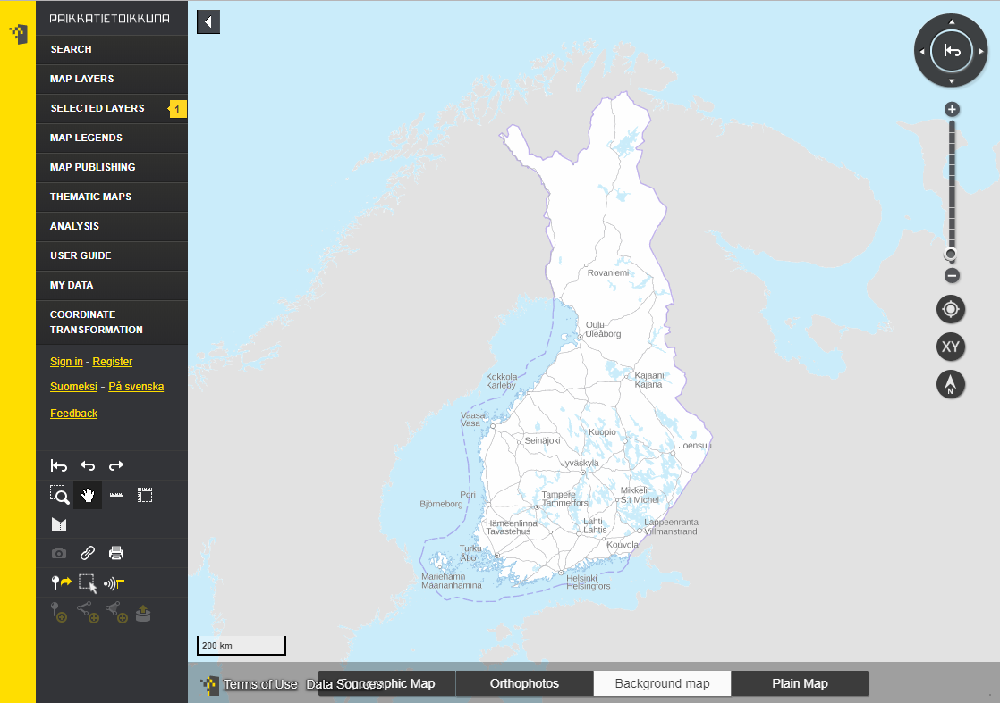

Year in review 9/2021
Sami Mäkinen - NLS Finland
### Oskari
- Library/framework/geoportal/tool
- Server: Java built with Maven
- Frontend: JS built with Webpack
- Requires:
- PostgreSQL/PostGIS
- Redis
- (Spatial Data Infrastructure)
History in nutshell
- National geoportal
- Open source!
- ???
- Profit?
National geoportal Finland

Arctic-SDI geoportal
 ### Repository arrangements
- oskari-server
- sample-server-extension
- oskari-frontend
- oskari-frontend-contrib
- sample-application
### React stuff
- Map layer listing / admin
### WFS integrations
- Complete rewrite
- MVT / GeoJSON
- WFS 3 supports
- Complex features
# Thank you!
- https://oskari.org
- https://github.com/oskariorg
- Oskari-user@lists.osgeo.org
- https://gitter.im/oskariorg/chat
### Repository arrangements
- oskari-server
- sample-server-extension
- oskari-frontend
- oskari-frontend-contrib
- sample-application
### React stuff
- Map layer listing / admin
### WFS integrations
- Complete rewrite
- MVT / GeoJSON
- WFS 3 supports
- Complex features
# Thank you!
- https://oskari.org
- https://github.com/oskariorg
- Oskari-user@lists.osgeo.org
- https://gitter.im/oskariorg/chat